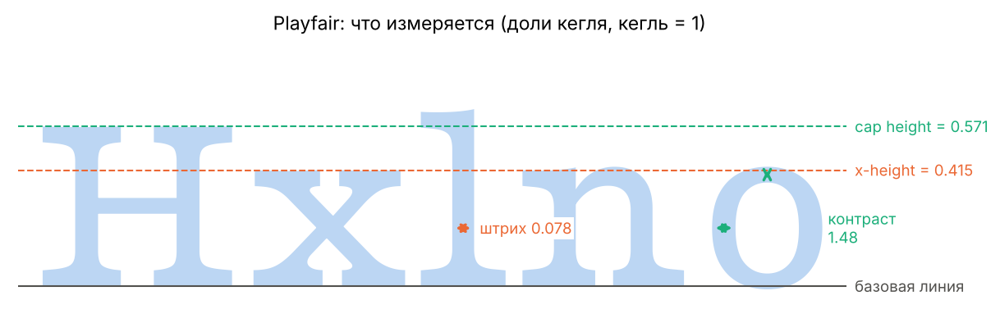

Датасет собран самостоятельно: 100 шрифтовых семейств из Google Fonts, по 20 гротесков, антикв, акцидентных, рукописных и моноширинных. У каждого измерено начертание Regular прямо по контурам букв. Все размеры даны в долях кегля, то есть не зависят от размера, которым набран текст.
Шрифты: высота строчных и толщина штриха

0,521медианная x-height гротесков
0,460медианная x-height антикв: строчные ниже, критерий Манна–Уитни это подтверждает
ρ = 0,40связь x-height и толщины штриха: чем выше строчные, тем толще штрих
Наведите на точку или выберите её клавишей Tab, чтобы увидеть название шрифта. Исследование: fonts.ipynb.
Попробуй сам
Толщина и ширина
Этот текст набран вариативным шрифтом Roboto Flex: у него толщину штриха и ширину букв можно менять плавно. Подвигай ползунки и посмотри, как меняется характер текста. Текст можно исправить — просто нажми на него.
Шрифт как случайная величина
Сравнение шрифтов
Выбери до трёх шрифтов из датасета и введи любой текст. Все строки набраны одним кеглем: сразу видно, у какого шрифта строчные выше и штрих толще. Пунктир — наши измерения: высота строчных (x-height) и прописных.
Датчик: случайное число, похожее на pH
Это датчик из спринта 2. pH белого вина описан логнормальным распределением со сдвигом: X = θ + eμ + σZ, где Z — стандартное нормальное число. Нормальные числа получаются полярным методом Марсальи: точка бросается в квадрат, и остаются только точки внутри круга. Для сравнения можно включить квантильное преобразование по самим данным.
данные, 4898 виндатчик (округлён до 0,01, как прибор)
Полная версия на marimo появится здесь после команды python tools/build_site.py.
Данные о винах взяты из общей работы команды. В полной версии на marimo шесть методов для трёх величин вина и таблица сравнения: datchik.py.